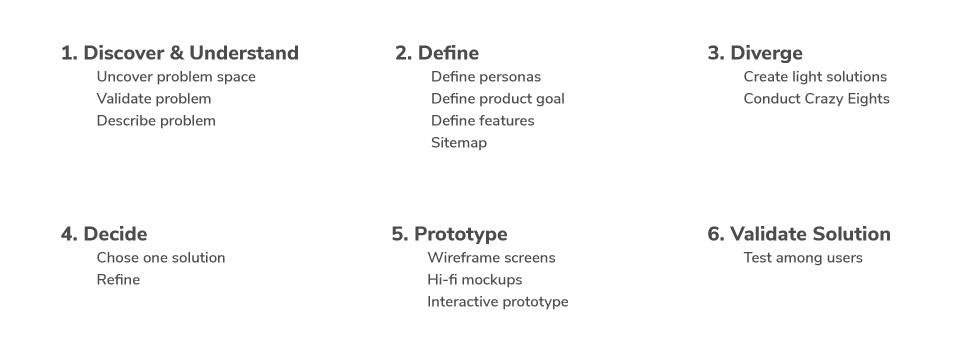
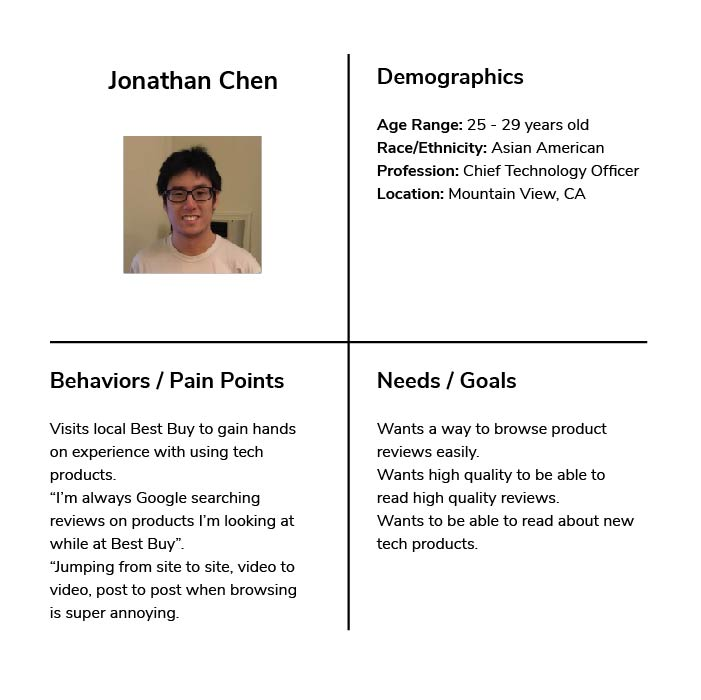
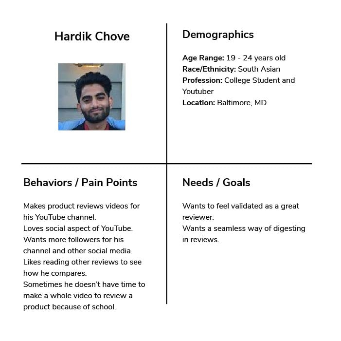
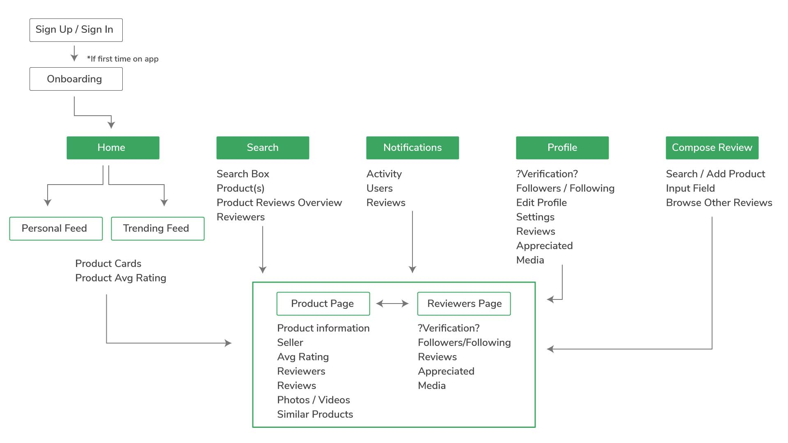
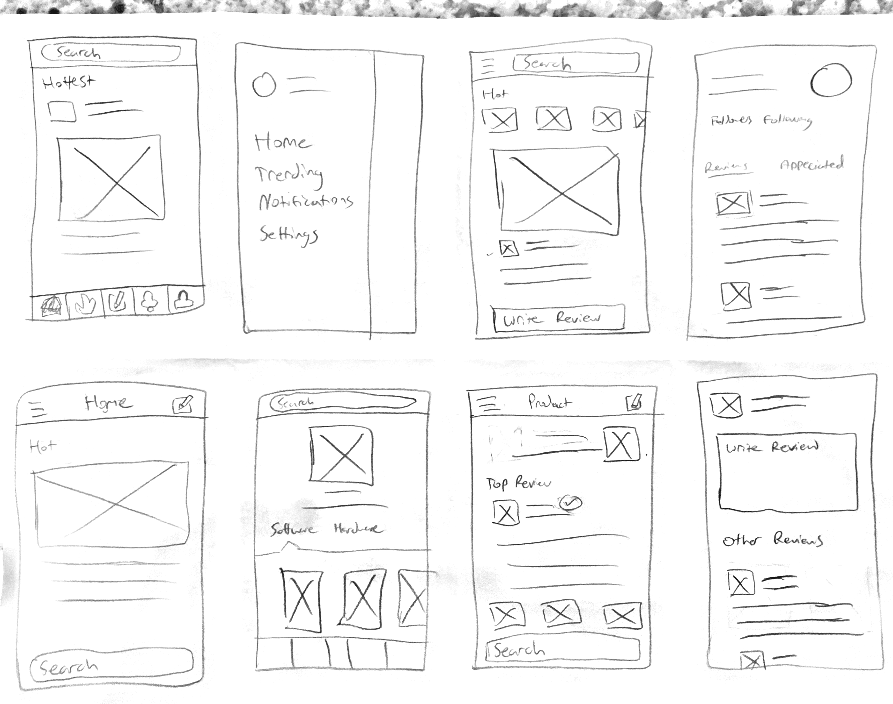
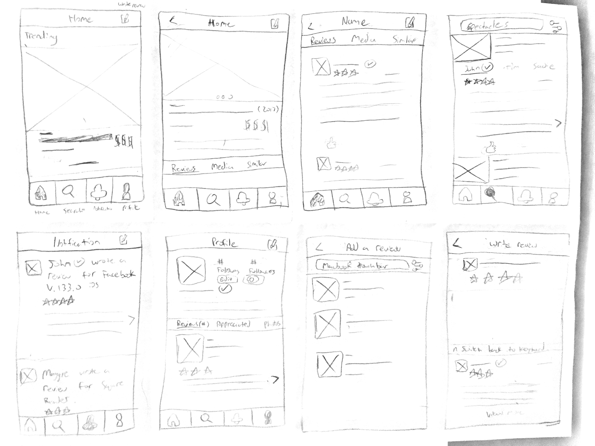
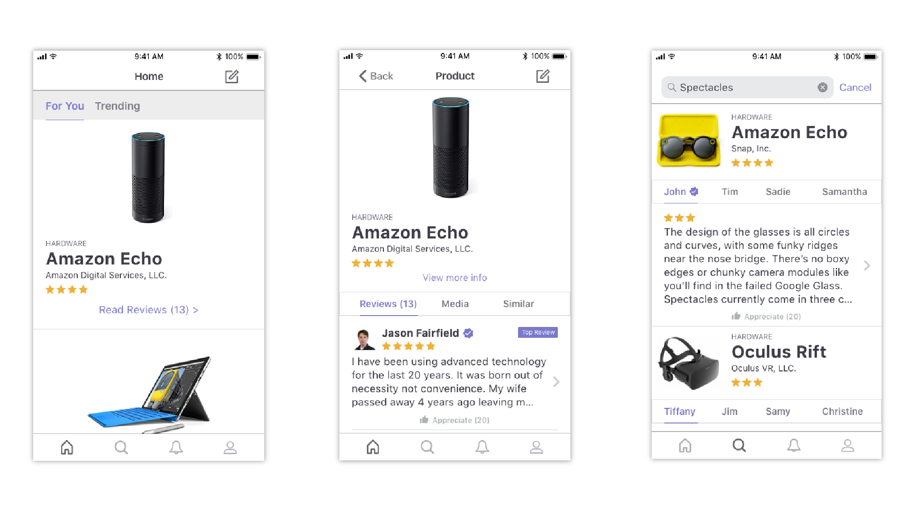
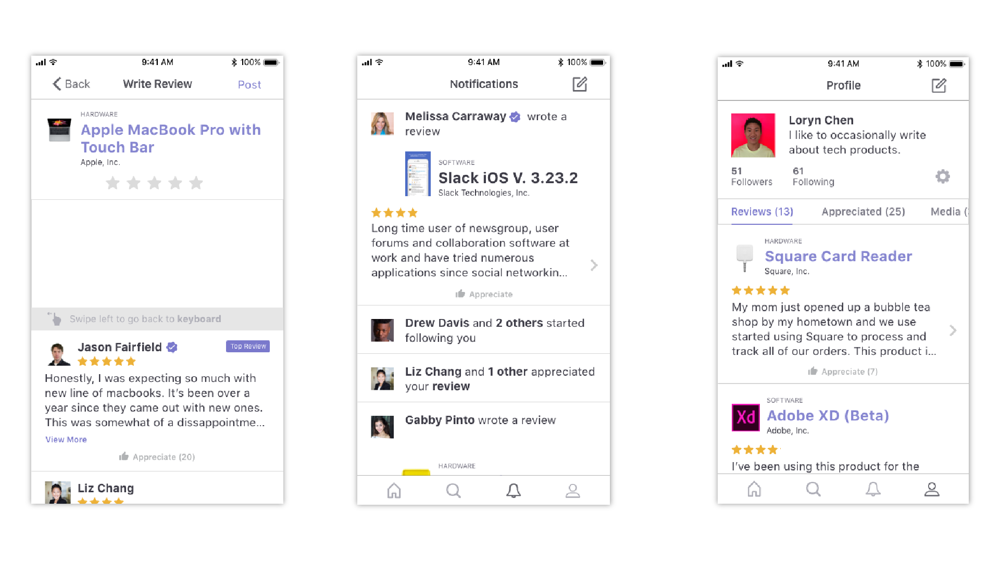

My Process
1. Discover & Understand
Uncover Problem Space
With so many consumer tech products out in this world, it can be difficult to know which ones are worth buying. People often look to reviews when deciding on if a product is worth their investment. However, these reviews are usually scattered all over the web. From YouTube, Amazon, to App stores, etc.
Validate Problem
I interviewed 8 individuals to see how problematic this was. 5 out of 8 described personal pains with the current flow.
"I hate having to google reviews on products and being overwhelmed by all of the search results."
"Often times when I try to find reviews online, I have trouble knowing which links are trustworthy."
"Jumping from website to website, video to video, post to post, is super annoying."
"I find myself reading through different websites, which is very time consuming."
"This sucks when I'm in the store. Wifi is usually slow and it takes forever for these websites to load."
Describe Problem
There were 3 big problems with the product reviews being dispersed around different websites:
- When browsing for reviews, the search results lead users feeling overwhelmed
- User suspicion on some websites with reviews
- A lot of unnecessary actions (clcking, tapping, scrolling, loading, etc) that take up time
2. Define
Personas
 Product Goals
This product aims to explore a solution to the problem by providing a new platform for reading and writing reviews related to hardware and software products.
Features

Sitemap
3. Diverge
Crazy Eights
This was a quick exercise that I utilized as part of my process in an effort to warm myself up and to get my creative juices flowing. In this technique, I generated 8 ideas related to the product in 5 minutes. The goal of this was for quantity not quality.
I had multiple ideas for the different screens of the app. I played around with having a hamburger menu and tab bars for navigation. I also explored different layouts for viewing the products, reviews, and positioning of the search bar.
4. Decide
Pick One Solution
I decided to go with having a bottom navigation for ease of access to the different screens and features of the app. The photos of the products should span the whole width of the screen when browsing the feed; in order to feel more immersive to the user.
Refine
Instead of having 5 tabs at the bottom, I decided to go with 4: a tab for the home feed, search, notifications, and profile. There would be an action button at the top navigation to allow the user to write a review.
5. Prototype
Wireframe Sketches
Hi-Fi Mockups
 Interactive Prototype
6. Validate Solution
After having a few people play with the prototype, I’ve gotten a lot of positive responses. People love the authenticity that this app generates. They enjoy seeing so much emphasis on the reviews and having it all on one platform is really nice.
I’ve gotten some feedback as well. Many people recommended that I allow users to follow products instead of just people. This would allow users to get notified when new reviews for that product get posted and hopefully allow them to make better decisions when thinking about buying that product. I think this is an idea worth exploring so I will go back to the drawing boards and figure out how much real value this feature would actually provide.
Key Takeaways
With this project, I learned how important it is to truly understand your users and to get them involved as early as possible. Interviewing potential users allowed me to get really personal with them and ultimately helped me get a better understanding on how they behave.